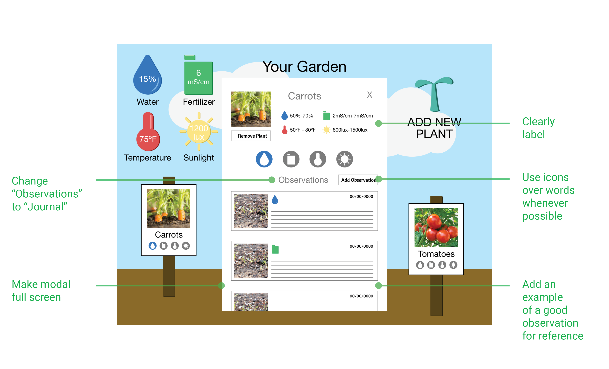

KELSEY PINTENS
PROBLEM STATEMENT
Develop a smart system that helps guide children through growing a garden.
LULU BUG
LULU Bug is a garden sensor that collects environment data and informs children on how to care for their garden. I continued with this product by refining and developing the app that goes along with the sensor.
WHY GARDENING?
I focused on creating a children's gardening tool for multiple reasons.
• Promotes healthy eating
• Improves environmental attitudes
• Facilitates education
• Teaches responsibility
• Develops a sense of community
• Increases self-confidence
-Source: kidsgardening.org
INTERVIEW INSIGHTS
SCIENCE IN SCHOOL
• Math and English are the two main subjects. Science is not introduced until third grade. Since Math and English are the priority, how can I introduce an independent Science learning experience?
• Science lessons are observation based. Students are often given worksheets with short answer questions and are encouraged to use new vocabulary as well as make detailed observations.
iPADS IN THE CLASSROOM
• Each student is given an iPad and because of this expense, teachers are encouraged to utilize the tool as much as possible. However, teachers are concerned about losing the hands-on learning experience.
PROJECT BASED LEARNING
• The concept of working on an ongoing project while focusing curriculum around that topic.
ELEMENTARY LEVEL EXPERIMENTS
• I was given examples of experiments conducted in class so I was able to understand the children's vocabulary and comprehension level.
COMPETITIVE ANALYSIS & INSPIRATION
I looked to other garden sensor apps to help understand how the data was being displayed to the user. I also looked to general gardening apps to gather more content to include in my own app. Lastly, I was inspired by children's apps to help understand important aspects of designing for children.
Garden Sensor Apps

Gardening Apps
Children's Apps

TARGET MARKET
Primary Persona: Scottie
Favorite Subject: Science
Learning Style: Kinesthetic
Activities: Football, karate, soccer
“A good day for me is when we win football at recess!”
Scottie is in third grade and he is full of energy. Even though he can be easily distracted, he loves to partake in engaging hands-on activities. He enjoys being independent and proving to adults he can do things on his own.
Secondary Persona: Christy
Occupation: Teacher
Location: Meadow View Elementary
Grade Level: Third Grade
“I’m always looking for fun independent learning activities they can do during their free time.”
Christy is a crafty teacher who enjoys doing creative side projects with her students. She teaches at Meadow View Elementary, where all of her students are given their own iPads. She understands the value technology brings to the classroom, however she feels it’s important to encourage hands-on learning as well.
USER TESTING
Having never designed for children before, I was given great feedback during my user testing.

SOLUTION

LULU BUG
Users are able to see the current outdoor data. They also can see the plants in their garden. There are alerts indicating if a plant is in need of special care.
VIEW OUTDOOR DETAILS
Users are able to click on any of the four outdoor categories. They can then see the definition of the unit of measurement and a graph of the recorded history.
ADD PLANTS TO GARDEN
Users are able to add any plant from the database to their garden. They also are able to simply just "learn more" information about the plant as well.
VIEW PLANT DETAILS
Users are able to compare the ideal needs of the plant to the current outdoor data. They also are able to keep a journal of their day-to-day observations.
ADD JOURNAL ENTRY
Users are able to add to their journal by adding a photo of their plant and filling out specific questions. They also have access to an example of what a good journal entry looks like.
VIEW LIVE APP
Checkout my code on GitHub Here
OR
Checkout my deployed app Here